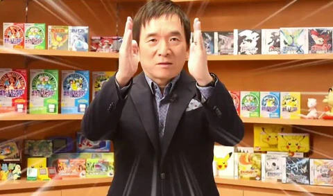
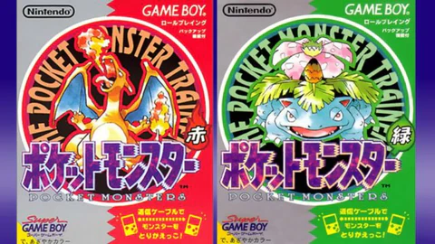
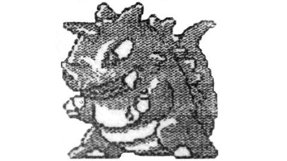
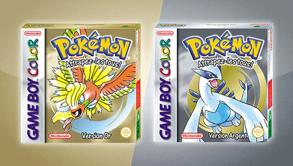

L'histoire de 
Le créateur de Pokémon et de Game Freak
Nous devons la création des pokemons à un talentueux game-designer, du nom de Satoshi Tajiri. Né en 1965 au Japon, il a grandi dans une banlieue de Tokyo, où son amour pour la nature et les insectes s’est développé. Il passe des heures à chasser, échanger et collectionner des insectes; ce qui lui vaudra même le surnom "Dr. Bug" (pour "docteur insecte")…
Il est également passionné par l’électronique, peut-être influencé par le métier de son père, qui travaillait chez Nissan ! Satoshi Tajiri passe alors des heures dans des salles d’arcades où il découvre les jeux-vidéos.

La naissance du jeu Pokémon
Satoshi Tajiri souhaite développer un jeu basé sur l’exploration d’un monde peuplé de créatures, inspiré tout droit de son pays natal, le Japon. Il veut un jeu au rythme lent, et opte pour le RPG, jeu à tour de rôle, comme dans le jeu Final Fantasy.
Lorsque Tajiri soumet son idée à Nintendo, le concept n'est pas directement compris. Il reçoit finalement l’aide de Shigeru Miyamoto pour la conception de Pocket Monsters qui parvient à l'aiguiller sur la manière de sortir son jeu !
Le jeu adopte finalement le nom “Pocket Monsters”, littéralement monstres de poche. Le titre japonais fut alors abrégé en “Pokémon” lors de sa sortie sur le marché occidental !

Qui a été le premier Pokémon ?
Pour le design spécifique des créatures, on peut remercier le fidèle dessinateurKen Sugimori. Le premier Pokémon dessiné n'est d'autre que Rhinoféros!

Une franchise en constante expansion
L’histoire de Pokémon ne s’arrête pas là. Face à la demande explosive, Nintendo commande à Game Freak d’autres versions du jeu. Après Pokémon version Bleue, Rouge et Verte, Pokémon Jaune sort en 1998. C’est là qu’on découvre Pikachu, qui devient le chouchou des fans, et très, vite, l’emblème de la licence.
Game Freak décide de créer de nouveaux Pokémons en plus des 150 des premiers jeux. C’est avec Pokémon version Or et Argent que la licence invente le concept de “génération” de Pokémon.
